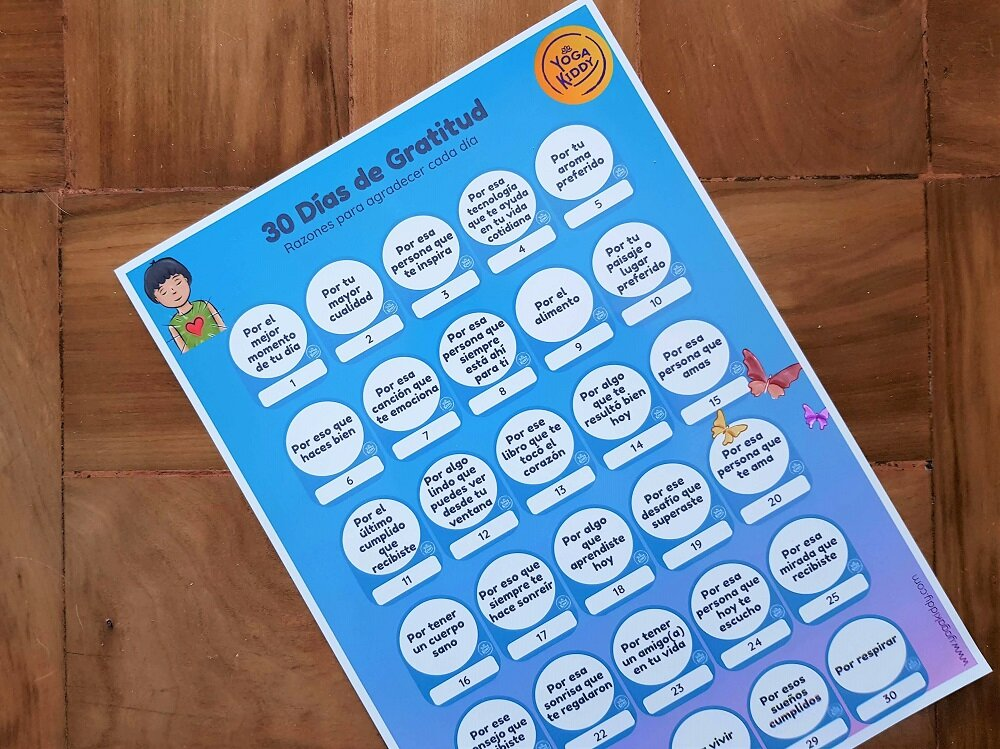

Este año ha sido un año de profundos cambios, lleno de dificultades y nos vimos enfrentados a lo desconocido. Sin embargo, sabemos que todo proceso requiere de incertidumbre antes de ver la luz.
Con esta actividad simplemente quiero invitarlos a detenerse, observar y AGRADECER, por las muchas bendiciones y oportunidades que nos regala la vida.
El Calendario de 30 días de gratitud para niños de YogaKiddy es una herramienta diseñada para ayudar a los niños a desarrollar una actitud de gratitud y atención plena. El calendario, que puede descargarse e imprimirse fácilmente, presenta una frase de gratitud diferente para cada día del mes en una página completa. Centrándose en un pensamiento positivo cada día, los niños pueden aprender a apreciar las cosas que tienen y desarrollar una actitud más positiva ante la vida. El calendario ha sido creado por YogaKiddy, una empresa especializada en ofrecer formación en yoga para niños.
Los beneficios de utilizar este calendario incluyen:
- Animar a los niños a desarrollar una práctica diaria de gratitud, que se ha demostrado que mejora el bienestar general y la felicidad.
- Ayudar a los niños a centrarse en los aspectos positivos de su vida, en lugar de detenerse en las experiencias negativas.
- Enseñar a los niños la importancia de la atención plena y los beneficios de tomarse un momento cada día para reflexionar sobre aquello por lo que están agradecidos.
- Mejorar las habilidades lingüísticas de los niños aprendiendo nuevo vocabulario sobre la gratitud.
- El diseño del calendario es visualmente atractivo, fácil de leer y entender, y útil para que los niños lo peguen en su pared o cuaderno.
- Es una forma sencilla y divertida de aprender sobre la gratitud y la atención plena con toda la familia.
En general, el Calendario de 30 días de gratitud para niños de YogaKiddy es una valiosa herramienta para ayudar a los niños a desarrollar una actitud positiva y mejorar su bienestar general. Es una forma fácil, divertida e interactiva para que los niños aprendan sobre la gratitud y la atención plena, y se puede utilizar como una actividad familiar.
Y tú, tienes algo por lo que quieras agradecer?
Carmen 💫